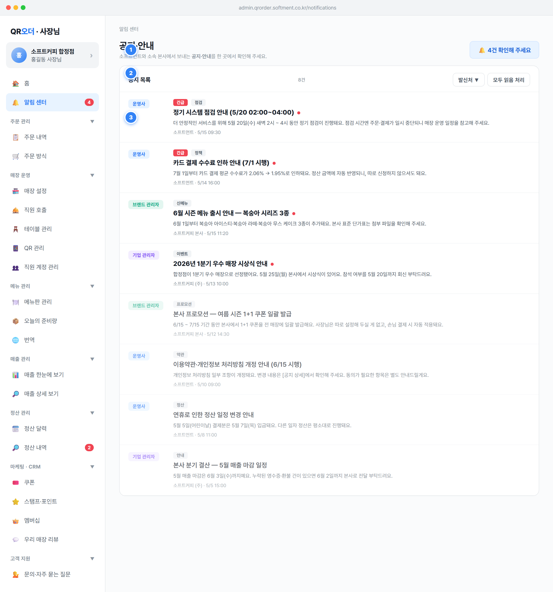

공지·안내와 안내 문구, 우측에 확인이 필요한 공지 강조 칩을 배치해 사장님이 미확인 건을 바로 인지하게 함알림 센터 메뉴 우측 빨간 배지로 표시 (값: NOTIFICATIONS.filter(n=>!n.read).length, 0이면 배지 숨김)🔔 N건 확인해 주세요 형태로 미확인 수를 노출, 클릭 시 state.notifyOnlyUnread 토글 → 활성 시 칩 색 반전 + 라벨 끝에 · 보는 중 추가notifyUnread), 카드 클릭 시 setSection('notify')로 진입notifyFilterOpen=false), 전체 발신처(notifyFilter='all'), 미확인만 보기 꺼짐(notifyOnlyUnread=false)NOTIFICATIONS[]: id, level(발신처), tag(분류), urgent(긴급 여부), title, body, issuer(표시용 발신 기관명), date, read(읽음 플래그)level 3종 — softment(시스템 관리자/운영사), corp(기업 관리자), brand(브랜드 관리자); 표시 메타는 NOTIFY_LEVELS(label·short·color·bg)!read 건수를 집계해 사이드바 배지·홈 카드·헤더 칩 세 곳에 동시 반영🔔 N건 확인해 주세요로 표현 (부정형 회피)소프트먼트와 소속 본사에서 보내는 공지·안내를 한 곳에서 확인해 주세요.모든 알림을 확인하셨어요)모두 읽음 처리 버튼으로 누적된 미확인을 한 번에 정리할 수 있게 함공지 목록 N건 · 전체 M건 중)(!read?2:0)+(urgent?1:0) 내림차순, 동률 시 date 최신순)발신처 ▼ 버튼 클릭 시 필터 줄 펼침(notifyFilterOpen 토글), 칩 4종 — 전체 / 🟦 시스템 관리자 / 🟪 기업 관리자 / 🟩 브랜드 관리자, 각 칩에 건수 배지, 선택 시 notifyFilter 갱신 + 버튼에 활성 점(●) 표시모두 읽음 처리 클릭 시 markAllNotifyRead() 실행 → 전 공지 read=true 일괄 처리 후 재렌더(배지·카운트 즉시 갱신)opacity:.65로 흐리게 처리notification.read (boolean) — 목록 강조·정렬·미확인 집계의 단일 기준sender/level 값으로 필터 (all|softment|corp|brand), 발신처별 건수 softCnt·corpCnt·brandCnt 집계state.notifyFilter·state.notifyFilterOpen·state.notifyOnlyUnread로 보관 (구버전 'unread' 값은 notifyOnlyUnread=true로 자동 이관)date는 목록에서 M/D HH:mm 축약 표기, 발신처 기관명 issuer와 함께 메타 줄에 노출새로운 공지를 모두 확인하셨어요 (부정형 회피)다른 조건으로 한번 살펴봐 주세요. 노출 (없다고 단정하지 않음)모두 읽음 처리는 사이드바 배지·헤더 칩이 즉시 0으로 줄어드는 것으로 처리 결과를 피드백line-clamp:2) 노출하고, 상세에서 전체 본문과 문의처 안내를 제공openNotifyDetail(id) 호출 → 해당 공지 read=true 처리 + 상세 모달 펼침 (열람 즉시 읽음 처리되어 미확인 카운트 감소)긴급 배지 + tag 배지, 제목, 발신처 · 발행일시 메타, 본문(white-space:pre-line), 문의 안내 카드, 닫기 버튼긴급 배지 노출 (예: 정기 점검·정책 변경)--bg-2)되어 클릭 가능함을 표시body, 발행일시 date(상세는 YYYY-MM-DD HH:mm 원본 표기), 중요도 urgent, 분류 tag(예: 점검·정책·약관·정산·신메뉴·이벤트·프로모션·안내)softment→고객센터(1644-0000), brand→본사 매장운영팀, corp→본사 사무국NOTIFY_LEVELS[level](label·short·color·bg)로 배지 색·라벨 결정, 본문 첨부(단가표 등)는 본문 내 안내로 연동read 플래그가 목록 강조·사이드바 배지·홈 카드 카운트에 즉시 반영긴급 텍스트 배지·아이콘을 병행 — SPEC 08 §7.1(색만으로 의미 전달 금지, 아이콘/텍스트 라벨 병행)💡 {발신처}에서 보낸 {분류}예요. 추가 문의는 {문의처}으로 부탁드려요.id로 상세 호출 시 모달을 열지 않고 무시(가드 if (!n) return;)해 오류 노출을 방지닫기 액션만 제공